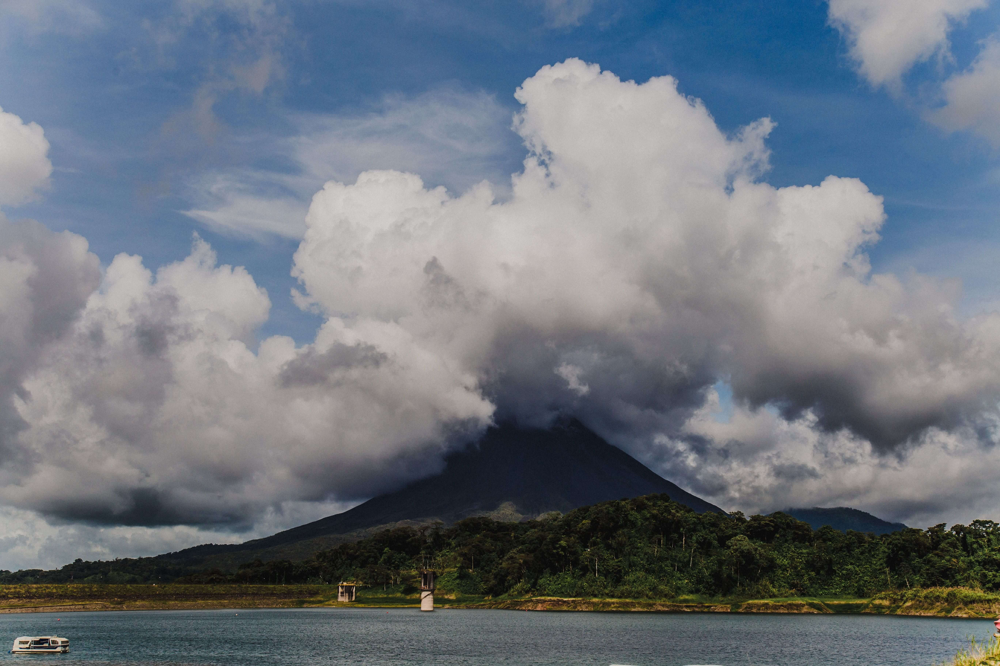
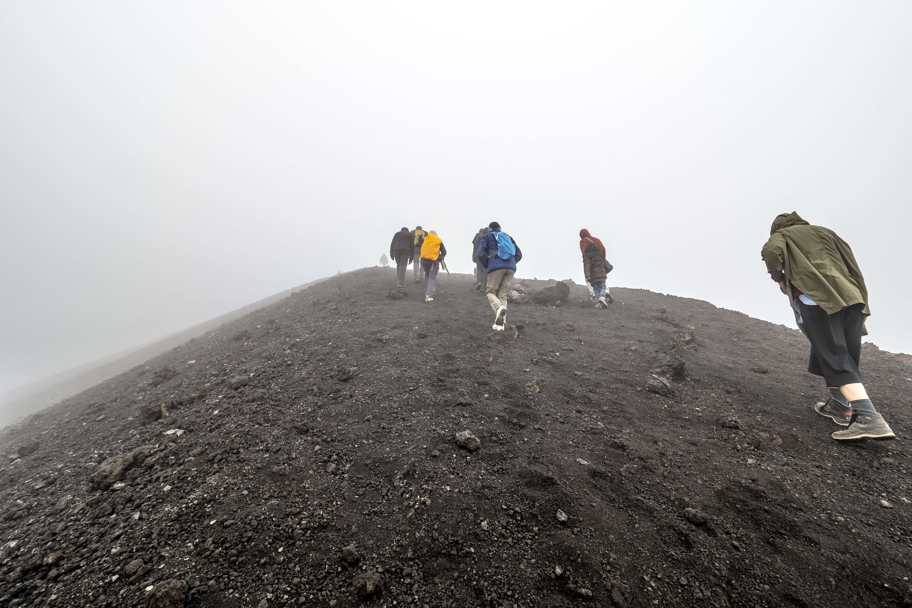

Arenal Volcano: The Ultimate Hiking & Sightseeing Guide
By Local Expert | Updated July 2026

The Arenal Volcano is Costa Rica’s most famous landmark. Known for its perfect conical shape, it dominated the landscape of La Fortuna until its last eruption in 2010. While you cannot climb to the crater, the trails around its base offer spectacular lava fields and rainforest views.
Quick Guide: National Park
- 💰 Entrance Fee: $15 USD for foreigners.
- ⏰ Hours: 8:00 AM to 4:00 PM (Last entry at 2:30 PM).
- 🥾 Best Trail: Las Coladas (Lava flow of 1968).
Where to Hike? The Best Trails
There are two main areas to explore the volcano. Both offer different perspectives of the massive cone:
1. Arenal Volcano National Park
This is the official government-run park. The "Las Coladas" trail is the most popular because it takes you directly to the 1968 lava flow, where you can walk over giant volcanic rocks and get a clear view of the crater.

2. Arenal 1968 (Private Reserve)
Located right next to the park, this private reserve offers more challenging hikes and even better viewpoints. Many travelers prefer it because it stays open a bit later and has a great cafeteria with volcano views.
AdSense In-Article Ad
Tips for a Perfect Visit
- Go early: The volcano is often covered in clouds by mid-day. The best chance for a clear view is between 7:00 AM and 9:00 AM.
- Rain Gear: Even in the dry season, it can rain. Bring a light poncho.
- Wildlife: Keep your eyes open! It’s common to see coatis, monkeys, and toucans along the trails.
Tired after the hike?
The best way to end a volcano day is by soaking in the hot springs.
View Best Hot Springs Guide